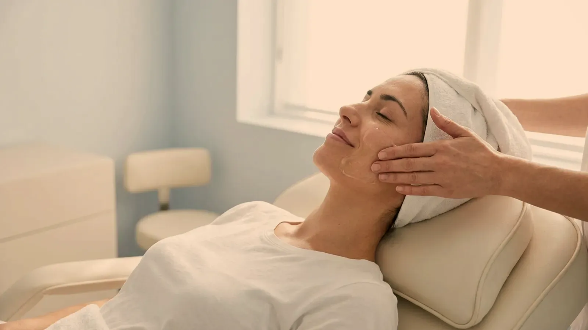
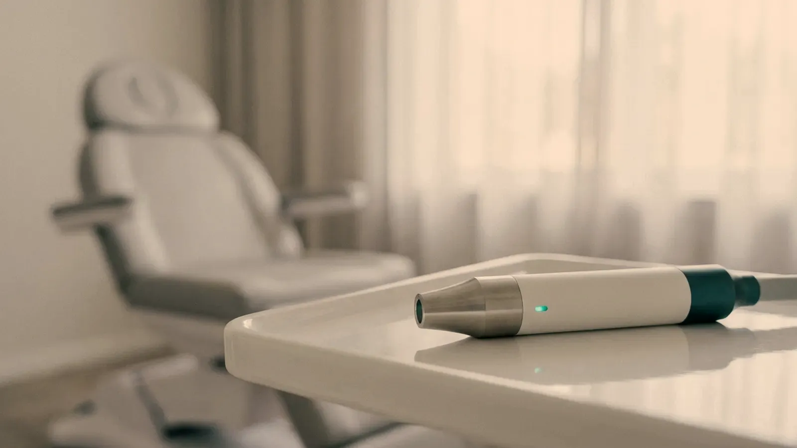

Cilt sorunları · 12 başlık
Önce ne yaşadığınızı anlamak istiyoruz
Dışarıdan aynı görünen iki yakınmanın arkasında bambaşka nedenler olabilir; örneğin göz altı koyuluğunu bazen pigment, bazen gölge oluşturur. Bu bölümdeki on iki sayfa, her şikâyetin nasıl ayrıştırıldığını ve bu ayrımın hangi seçenekleri gündeme getirdiğini anlatır. Hangi uygulamanın konuşulacağına ancak bu adımdan sonra karar verilir.

Temsilî görsel · yapay zekâ ile üretildiBaşlıklar
Hangi şikâyet sizi buraya getirdi?
Size en yakın başlığı seçin; birden fazlası tanıdık geliyorsa hepsini okuyabilirsiniz, çünkü şikâyetler sıklıkla bir arada bulunur. Bu sayfalar tanı koymaz; amaçları, muayeneye hangi soruları konuşacağınızı bilerek gelmenizi sağlamaktır.
Mimik Çizgileri ve Kırışıklık
Çizgi yalnızca yüzünüz hareket ederken mi beliriyor, yoksa dinlenirken de duruyor mu? Plan bu soruyla başlar.
İnceleHacim Kaybı ve Sarkma
Eksilen dolgunluk mu, gerginlik mi? Yüzün hangi katmanının değiştiği belirlenmeden destek ya da sıkılaştırma seçilmez.
İnceleGöz Altı Koyuluğu
Koyu görünüm pigmentten, damarlardan, ince deriden, gözyaşı oluğundaki hacim kaybından ya da ödemden gelebilir; önce kaynak ayrılır.
İnceleAkne ve Akne İzi
Akne sürerken yapılacaklarla geride iz kaldığında yapılacaklar farklıdır. Cildinizin hangi dönemde olduğu saptanır, sıra buna göre kurulur.
İnceleCilt Tonu ve Leke
Güneş lekesi, melazma ve iltihap sonrası koyulaşma benzer görünür ama farklı yollarla ilerler; güneşten korunma hepsinin temelidir.
İnceleGözenek ve Cilt Dokusu
Gözeneğin ne kadar dikkat çektiği yağ salgısına, yüzey kalınlığına ve destek dokuya bağlıdır; pürüz ve akne izi ayrıca değerlendirilir.
İnceleCiltte Nem Kaybı ve Donukluk
Mat ve gergin ciltte sorun çoğunlukla zayıflamış koruyucu katmandır. İlk adım yeni ürün eklemek değil, cildi yoranı bırakmaktır.
İnceleSaç Dökülmesi
Yaygın dökülmenin ardında demir, tiroit ya da yakın zamanda geçirilmiş bir hastalık olabilir; saçlı deriye bakmadan önce neden araştırılır.
İnceleAşırı Terleme
Koltuk altı, avuç içi ya da ayak tabanında yoğunlaşan bölgesel terleme mi, başka bir nedene bağlı yaygın terleme mi? Ayrım önce yapılır.
İnceleBölgesel Yağlanma
Diyet ve harekete rağmen küçülmeyen sınırlı bir birikim mi, ödem ya da gevşek deri mi? Gıdı, karın ve bel muayenede ayrı ayrı değerlendirilir.
İnceleSelülit Görünümü
Selülit bir hastalık değil, deri altı yapısının yüzeye yansımasıdır. Evresi ve eşlik eden durumlar belirlenerek gerçekçi bir hedef konuşulur.
İnceleDövme ve Kalıcı Makyaj
Dövmede ve kalıcı makyajda sonucu rengin, derinliğin ve mürekkep içeriğinin yanıtı belirler; açık tonlarda önce test atışı yapılır.
İnceleSüreç
Neden önce ayırıp sonra uyguluyoruz?
Deri şikâyetlerinin çoğu dışarıdan birbirine benzer. Kızarıklık bir tahrişin de, damarsal bir durumun da işareti olabilir; koyu renk hem pigment artışından hem de ince deriden görünen damarlardan kaynaklanabilir. Görünene bakıp doğrudan işleme geçildiğinde değişim beklendiği gibi olmayabilir, şikâyet kısa sürede geri dönebilir ya da cilt daha çok tahriş olabilir. Bu yüzden sıralama hiç değişmez ve ilk görüşmede işlem yapılması beklenmez.
Öykü: şikâyetin zaman çizelgesi
Şikâyet ne zaman başladı, nasıl seyretti, mevsimle ya da işinizle değişiyor mu, hangi ürün ve ilaçları kullanıyorsunuz, başka yakınmalarınız var mı? Bu soruların yanıtları kayda geçer; ayrımı en çok belirleyen adım öyküdür.
Muayene ve gerektiğinde büyütmeli bakı
Bulguların nerede, nasıl dağıldığı, kenarları ve yüzey özellikleri incelenir. Uygun durumlarda deri ya da saçlı deri büyütmeli olarak değerlendirilir.
Yalnızca planı değiştirecek tetkikler
Bir tetkik yalnızca sonucu planı etkileyecekse istenir. Standart bir tahlil paketi yoktur; hangi değere bakılacağı öykünüze ve muayene bulgularınıza göre seçilir.
Ayrım, plan ve bilgilendirme
Öne çıkan neden size açıklanır; hangi seçeneklerin masada olduğu, hangi sonucun gerçekçi olmadığı ve hangi koşullarda işlem yapmayacağımız konuşulur. Karar vermeden önce düşünmeniz için zaman tanınır.
Evet, üstelik sık verilen bir karardır. Koruyucu katmanı zayıflamış bir ciltte önceliğin rutini sadeleştirmek olması, demir eksikliğine bağlı saç dökülmesinde önceliğin genel sağlığa verilmesi bunun örnekleridir. Kimi istekler ise muayenehanemizin kapsamına girmez; o zaman işleme geçmeyiz ve hangi uzmanlık dalına başvurabileceğinizi söyleriz. Nerede durduğumuzu neden bazı işlemleri yapmıyoruz, nasıl çalıştığımızı yaklaşımımız başlıklı sayfalarda bulabilirsiniz.
Bazı bulgular sıra beklemez: kısa sürede rengi, kenarı ya da boyutu değişen bir ben; iki haftayı geçtiği hâlde kapanmayan bir yara; birkaç gün içinde bütün vücuda yayılan döküntü; ateş, açıklanamayan kilo kaybı ya da gece terlemesiyle birlikte görülen deri değişiklikleri.
Yüzünüzde, dudaklarınızda ya da dilinizde birden şişlik başlarsa, nefes almakta veya yutkunmakta zorlanırsanız, döküntüye baş dönmesi eşlik ederse ya da kızarık ve ağrılı bir alan saatler içinde büyüyorsa vakit kaybetmeden 112 Acil Çağrı Merkezi’ni arayın ya da en yakın hastanenin acil birimine başvurun.
Sonrası
Ayrım yapıldıktan sonra hangi sayfalar yol gösterir?
Ayrım tamamlandığında konuşulabilecek uygulamaların hepsi uygulamalar bölümünde yer alır; aşağıdakiler en sık başvurulan kapılardır.
Uygulamalar
TÜMÜUygulamaya göre→Hekim muayenesi
İLK ADIMAynı gün→Uygulama sonrası takip
İZLEMRandevuya göre→
Uygulamalar
Muayenehanemizde yapılan enjeksiyon, cihaz ve saçlı deri uygulamalarının tamamı ve kapsamları.
Sayfasına git →Sık gelen sorular
Merak ettiğiniz soruya dokunun, yanıtı burada açılsın
Bir adım ötesi
Şikâyetinizin kaynağını birlikte ayıralım
Telefon ve WhatsApp için aynı numarayı kullanabilirsiniz: 0539 933 08 08. Dilerseniz iletişim sayfasındaki formdan da randevu talebi bırakabilirsiniz.
Metni hazırlayan ve tıbbi açıdan gözden geçiren: Uzm. Dr. Rahmi Cebeci (Aile Hekimliği Uzmanı · Medikal Estetik Sertifikalı).
Buradaki anlatım herkese yöneliktir; size özel bir teşhis ya da tedavi planı sunmaz, muayenenin yerini tutmaz. Her uygulamanın etkisi kişiye göre farklı olur.